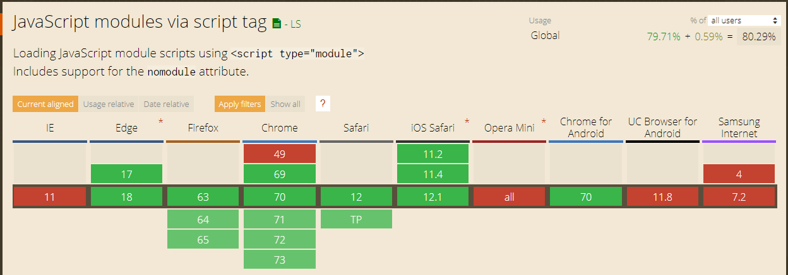

// We assign value of IIFE to variable
let animal = function() {
return {
nameOfAnimal: 'tiger';
getSound: function() {
return "Roar!";
}
}
}();
// Use returned object
animal.nameOfAnimal; // Tiger
animal.getSound(); //Roar
THE READY IMPLEMENTATION OF MODULES
AMD (Asynchronus Module Definition)
CommonJS
Modules ECMAScript 2015
AMD (Asynchronus Module Definition)
// Export
//myFirstModule.js
define('myFirstModule',
['foo', 'bar'],
// dependencies foo and bar give into function
function(foo, bar) {
// create module
var myModule = {
doStuff: function() {
console.log('Hi listeners!');
}
}
// return module
return myModule;
});
// Import
// index.js
require('myfirsModule', function(myfirstModule) {
myfirstModule.doStuff();
});
CommonJS
// CommonJS
// export
// multiply.js
function multiply(a, b) {
return a * b;
}
module.exports = multiply;
// index.js
let multi = require('./multiply');
multi.multiply();
MODULES ECMAScript 2015
Support modules ECMAScript 2015 by browsers

Including modules ECMAScript 2015 in browser
Export stuffs by writing word export before exporting thing.
// operations.js
export function sum(a, b) {
return a + b;
}
export function multiply(a, b) {
return a * b;
}
// index.js
import { sum, multiply } from './operations';
sum(2, 3); // 5
myltiply(2, 3) // 6
Export by writing importing things in the end of the file
// operations.js
function sum(a, b) {
return a + b;
}
function multiply(a, b) {
return a * b;
}
export { sum, multiply };
// index.js
import { sum, multiply } from './operations';
sum(2, 3); // 5
myltiply(2, 3) // 6
Export with changing names
// operations.js
function sumOfTwoNumbers(a, b) {
return a + b;
}
function multiplyOfTwoNumbers(a, b) {
return a * b;
}
export {
sumOfTwoNumbers as sum,
multiplyOfTwoNumbers as multi
};
// index.js
import { sum, multi } from './operations';
sum(2, 3); // 5
myltiply(2, 3) // 6
Default export
// operations.js
export default function(a, b) {
return a + b;
}
// index.js
import sum from './operations';
sum(2, 3); // 5